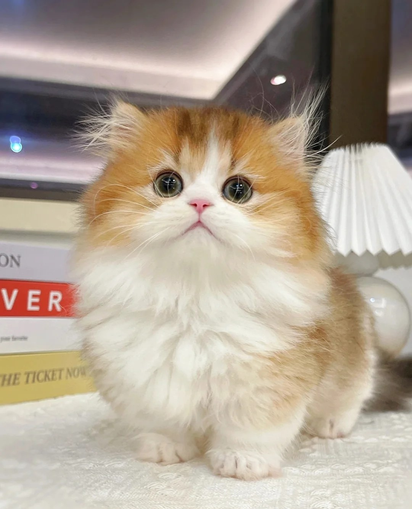

Minuet cat is a kind of Napoleon short-legged cat, which is divided into long-haired Napoleon cat and short-haired Napoleon cat. This cat is characterized by its short legs, which are much shorter than those of normal cats, but it will not affect its walking and running speed. Minuet cat is a combination of a Munchkin cat and a Persian cat, which inherits the sweetness of a Persian cat and the short legs of a Munchkin cat.
In this article ↘
The Minuet Cat is a relatively new breed created in 1996. But, while the founder, Joe Smith, was hoping to develop a short-legged breed by crossing Persians with Munchkin Cats, he quickly realized that genetics wasn't on his side. Because the short-legged gene is recessive in cats, the chances of all Minuet kittens in a litter having short legs are extremely low.
Smith was able to obtain a Munchkin cat in 1996, and it was discovered that this kitten had Persian ancestry. He was then able to obtain an Exotic cat. When the Exotic and Munchkin had a litter of kittens in 1997, they possessed the traits that Joe desired.
This breed was originally known as the Napoleon, but The International Cat Association (TICA) changed its name to Minuet in 2015.
The Minuet cat is distinguished by its short stature, which is why it was named after Napoleon Bonaparte. Despite the fact that many of these cats have short legs, some kittens are born with long legs. The following are the breed's most important physical characteristics.
The Minuet is a short-legged medium-sized cat breed. These cats were purposefully bred with short legs. They typically weigh 5 to 9 pounds and stand 7 to 8 inches tall.
The Minuet is not only a cute breed in appearance, but it also has a charming personality. Because they enjoy being around people, these cats are very affectionate and social. Minuet cats, like Persians, are incredibly gentle, but they also have the curiosity and energy that Munchkins are known
Unlike other cat breeds with a distinct appearance that makes them easy to identify, Minuet cats come in every color and pattern, including those not traditional Persian colors. Don’t be surprised if you come across shaded, mink, pointed, sepia, chocolate, lilac, bi-color, or cinnamon Minuet kitties, for example. They can also have white skin and green eyes.
Minuet also includes short hair and long hair. Moreover, cats in Minuet have a lot of furs, and their fur grows away from their bodies. The only difference between long hair and short hair is the appearance of the coat. Short hair is comfortable to the touch and suitable for all seasons. Long hair is a long coat like silk with legs and a feathery tail.
The Minuet is a sweet, loving, easy-going cat. They are outgoing and social, so be ready to give the Minuet plenty of love and attention. In fact, the moment you return home, the Minuet will be at your feet, ready to follow you. Because of their affinity for attention, the Minuet is a trainable cat.